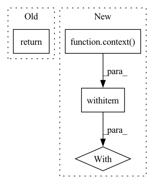

Pattern ID :3656
Before Change
@eval_decorator
def valid_step(self, **kwargs):
self.create_valid_iter()
return self.step_with_dl_iter(self.valid_dl_iter, **kwargs)
def step_with_dl_iter(self, dl_iter, **kwargs):
dl_tuple_output = cast_tuple(next(dl_iter))After Change
context = self.use_ema_unets if kwargs.pop("use_ema_unets", False) else nullcontext
with context ():
loss = self.step_with_dl_iter(self.valid_dl_iter, **kwargs)
return loss
def step_with_dl_iter(self, dl_iter, **kwargs):In pattern: SUPERPATTERN
Frequency: 3
Non-data size: 4
Instances Fragment ID: 13779238
Project Name: lucidrains/imagen-pytorch
Commit Name: bec6c53b953b9de45b398f421d69e7abe9b7c517
Time: 2022-07-08
Author: lucidrains@gmail.com
File Name: imagen_pytorch/trainer.py
M Class Name: ImagenTrainer
N Class Name: ImagenTrainer
M Method Name: valid_step(1)
N Method Name: valid_step(1)
M Parent Class: nn.Module
N Parent Class: nn.Module
M File Name: imagen_pytorch/trainer.py
N File Name: imagen_pytorch/trainer.py
M Start Line: 312
M End Line: 312
N Start Line: 313
N End Line: 317
Before Change
critic_labels
)
return loss + critic_loss * self.critic_loss_weight
After Change
context = torch.no_grad if only_train_critic else nullcontext
with context ():
logits = self.net(masked, **kwargs)
// cross entropy loss
Fragment ID: 13779239
Project Name: lucidrains/x-transformers
Commit Name: 46fc747d56079097b9d031cc7124bb379971d713
Time: 2023-01-20
Author: lucidrains@gmail.com
File Name: x_transformers/nonautoregressive_wrapper.py
M Class Name: NonAutoregressiveWrapper
N Class Name: NonAutoregressiveWrapper
M Method Name: forward(5)
N Method Name: forward(2)
M Parent Class: nn.Module
N Parent Class: nn.Module
M File Name: x_transformers/nonautoregressive_wrapper.py
N File Name: x_transformers/nonautoregressive_wrapper.py
M Start Line: 225
M End Line: 298
N Start Line: 231
N End Line: 318
Before Change
@imagen_sample_in_chunks
def sample(self, *args, **kwargs):
if kwargs.pop("use_non_ema", False) or not self.use_ema:
return self.imagen.sample(*args, **kwargs)
self.reset_ema_unets_all_one_device()
self.imagen.reset_unets_all_one_device()After Change
def sample(self, *args, **kwargs):
context = nullcontext if kwargs.pop("use_non_ema", False) else self.use_ema_unets
with context ():
output = self.imagen.sample(*args, device = self.device, **kwargs)
return output
Fragment ID: 13779240
Project Name: lucidrains/imagen-pytorch
Commit Name: bec6c53b953b9de45b398f421d69e7abe9b7c517
Time: 2022-07-08
Author: lucidrains@gmail.com
File Name: imagen_pytorch/trainer.py
M Class Name: ImagenTrainer
N Class Name: ImagenTrainer
M Method Name: sample(1)
N Method Name: sample(1)
M Parent Class: nn.Module
N Parent Class: nn.Module
M File Name: imagen_pytorch/trainer.py
N File Name: imagen_pytorch/trainer.py
M Start Line: 499
M End Line: 519
N Start Line: 529
N End Line: 534